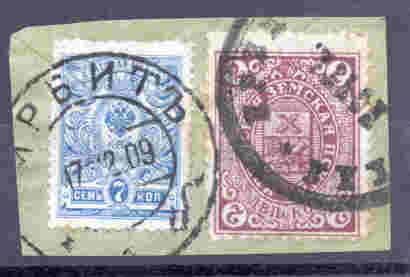
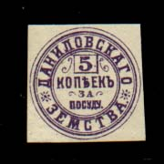
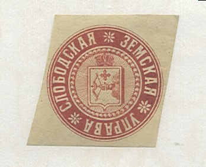
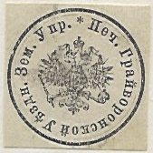
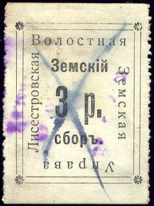

Parcel stamp, issued by the 'Chairman of the common people' from Orshansk
Return To Catalogue -
Russia
Akhtyrka.. Berdiansk - Bielozersk.. Borisoglebsk - Borivichi.. Byezhetsk - Chembar.. Dukhovschin - Fatezh..Gdov - Glazov..Gryazovets
- Irbit-Kadnikov - Kamyshlov-Kholm - Khvalynsk-Kolomna
- Konstantinograd-Kuznetsk - Laishev-Lubny - Luga-Morhansk
- Nikolsk-Okhansk - Opochka-Ostrov - Pavlograd-Piryatin
- Podolsk-Poltava - Porkhov-Pudozh - Rostov-Sapozhok
- Saransk-Shadrinsk - Shatsk-Spassk - Staraya
Russa-Tetyushi - Tiflis-Tver - Urzhum-Velikii Ustyug - Velsk-Yegorevsk - Yekaterinburg-Zadonsk
- Zemlyansk-Zolotoshna
Note: on my website many of the
pictures can not be seen! They are of course present in the
catalogue;
contact me if you want to purchase it.
In imperial Russia, numerous local postal services existed. The imperial post didn't serve all the towns, the so-called 'ZEMSTVOS' rural postal services filled this gap. In total, about 3400 different stamps were issued.
If anybody posesses pictures of Zemstvo stamps that are not yet in my catalogue, please contact me!
The following disticts issued its own stamps: Akhtyrka, Alatyr, Alexandria, Ananiev, Ardatov, Arzamas, Atkarsk Bakhmut, Balashov, Belebei, Berdiansk, Bielozersk, Bobrov, Bogorodsk, Boguchar, Borisoglebsk, Borovichi, Bronnitsy, Bugulma, Buguruslan, Buzuluk, Byezhetsk, Chembar, Cherdyn, Cherepovets, Cherkask, Chern, Chistopol, Dankov, Demiansk, Dmitriev, Dmitrov, Dneprovsk, Donets, Dukhovschina, Fatezh, Gadyach, Gdov, Glazov, Gryazovets Irbit, Kadnikov, Kamyshlov, Kashira, Kasimov, Kazan, Kharkov, Kherson, Kholm, Khvalynsk, Kirillov, Kobelyaky, Kologriv, Kolomna, Konstantinograd, Korcheva, Kotelnich, Kozelets, Krapivna, Krasnoufimsk, Krasny, Kremenchug, Kungur, Kuznetsk Laishev, Lebedin, Lebedyan, Lgov, Livny, Lokhvitsa, Lubny, Luga Malmyzh, Maloarkhangelsk, Mariupol, Melitopol, Morshansk, Nikolsk, Nolinsk, Novaya Ladoga, Novgorod, Novomoskovsk, Novorzhev, Novouzensk, Odessa, Okhansk, Opochka, Orgeev, Osa, Ostashkov, Oster, Ostrogozhsk, Ostrov, Pavlograd, Penza, Pereslavl, Pereyaslav, Perm, Petrozavodsk, Piryatin, Podolsk, Poltava, Porkhov, Priluky, Pskov, Pudozh, Rostov, Ryazan, Ryazhsk, Rzhev, Samara, Sapozhok, Saransk, Sarapul, Saratov, Shadrinsk, Shatsk, Shchigry, Schlisselburg, Simferopol, Skopin, Smolensk, Solikamsk, Soroki, Spassk, Staraya Russa, Starobyelsk, Stavropol, Sudzha, Sumy, Syzran, Tambov, Tetyushi, Tikhvin, Tiraspol, Toropets, Totma, Tula, Tver, Urzhum, Ustsysolsk, Ustyuzhna, Valdai, Valki, Vasil, Velikii Ustyug, Velsk, Verkhnedneprovsk, Verkhotur, Vesegonsk, Vetluga, Viatka, Volchansk, Volsk, Yarensk, Yassy, Yegorevsk, Yekaterinburg, Yekaterinoslav, Yelets, Yelisavetgrad, Zadonsk, Zemlyansk, Zenkov, Zmeinogorsk, Zolotonosha
In general these stamps are rare, non of them are common; age (in their days these stamps were not collected much) and 2 world wars have left their traces....

Thanks to Bill Claghorn, for giving me many of the images presented here!
Warning: in the 1890's many of the rarer Zemstvo stamps were forged in London and Berlin (information thanks to Brian Hickling), I have no further information right now.
I would like to thank Robert Scott for identifying these stamps for me:



Parcel stamp, issued by the 'Chairman of the common people' from
Orshansk
(Probably a seal, issued by the Kovrovsk District Zemstvo)

(A zemstvo stamp for Lisestrovsk?)
I've been told that the next stamp, a 10 R Russia stamp with overprint, is a non-issued Zemstvo issue, I have no further information:

Unissued Zemstvo stamp?
The following stamp is not a zemstvo:
(The inscription reads 'Victims of Galicia')
Russia issued many fiscal stamps and other labels, some of the local ones also have the inscription 'ZEMTVO' (in Russian).
Doplatit = Postage due
Zakaznoe = Registered
http://www.rossia.com/stamps/frzemstvo.htm
with many pictures and prices for Zemstvo stamps on recent
auctions!
Les Timbres-Poste Ruraux de Russie by Samuel Koprowski 1875
(J.B.Moens editor); downloadable from http://www.archive.org.
Les Timbres de Russie J.-B.Moens 1893 downloadable from http://www.archive.org.
{kind=link}